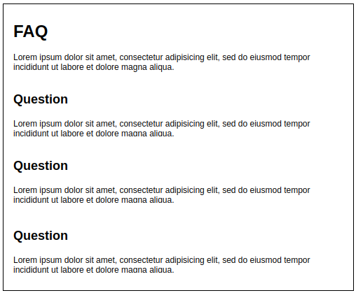

The FAQ Page
In this assignment we are going to complete your Glitch sites FAQ page. Do not forget that we have provided a majority of the content for this page already: Dry Oar Content.
Artistic License:
This assignment is meant to further your progress on building a simple working website for the fictitious whitewater rafting business: Dry Oar. It should be considered the minimal requirements for a passing grade. To receive the highest points possible please adapt the design and add to it appropriately. Demonstrate your web development skills with each page you add to your project website. Don't forget to review the Colors resource page and consider adding modest colors to your site.
Assignment
-
Wireframe
Familiarize yourself with the FAQ page wireframe. You will notice that this is a partial wireframe, it is missing the websites header and footer. For this project you will continue to use the exact same header and footer from your home page. The following wireframe is meant to only show what the pages content should look like. Being provided a partial wireframe is a common occurrence when working in a small development team, or for a business that has a limited budget for professional wireframing tools. Sometimes, with really complex designs, it is also beneficial to zoom in on a portion of the design and strip away parts that we do not need to focus on; the header and footer for example.

-
Build
Using the HTML and CSS skills you have learned so far in this course, complete the FAQ page for your website. Remember, you can work directly in Glitch or locally in VS Code. If you work locally you must copy-paste your code to the appropriate parts of Glitch or upload the files to Glitch. You should only have one Glitch project (website), do not create multiple Glitch projects for each assignment.
The following links will help you create this page. Keep in mind that web browsers automatically style certain HTML elements. You will need to create your own CSS to overwrite or remove these styles if they do not match your websites design:
-
Questions
If you have any issues designing this page make sure to reach out to your group for help. Tutoring is also available, the link is in your Canvas course. Please bring questions to class as well so we can all learn together. Do not struggle in silence! This is your first project website and you do not want to fall behind on it.
-
Publish
If you worked locally in VS Code for this assignment make sure your final code and files have been added to Glitch; don't forget to upload images into your Glitch project and update their
src; if you added any images. View the live Glitch site to make sure the web page displays correctly. Pay special attention to whether your styles are displaying correctly and all images are loading. Once verified, submit the URL to your live home page in Canvas.Don't forget you should validate your code before sending it to production (putting it on the internet for everyone to see). For HTML files you can use the W3C Markup Validation Service and for CSS files you can use the W3C CSS Validation Service.
Grading
You will be graded at your instructor's or teaching assistant's discretion on how well you followed instructions and made your FAQ page match the wireframe.